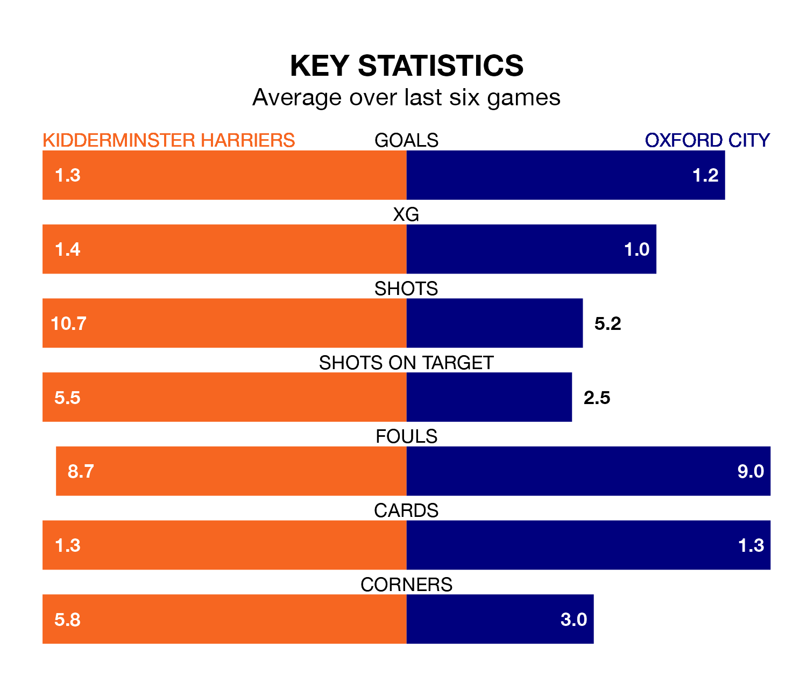

Struggling Oxford City face Kidderminster Harriers away at the Aggborough Stadium on Saturday looking to build on a win in their last league outing.
After securing all three points with a 1-0 victory over Ebbsfleet United on January 27, Oxford sit bottom of National League.
They travel to play a Kidderminster Harriers side 23rd in the standings, who also won their last match, 1-0 against Dagenham and Redbridge.
With 26 goals in 31 games so far this season, Kidderminster Harriers are the league's lowest scorers with 0.8 goals per game. But they are conceding fewer than average too, letting in 39 goals at a rate of 1.3 per game.
Oxford are also below average scorers, with 1.4 goals per game, compared to a league average of 1.5. They have conceded 1.9 goals per game.
Kiddy are in mixed form in National League, with three wins and a draw from their last six games.
With two wins and four losses over that period, City's form is worse – they have taken six points from 18, compared to the home side's 10.
Updated: 09:21 (UTC), 30/01/24